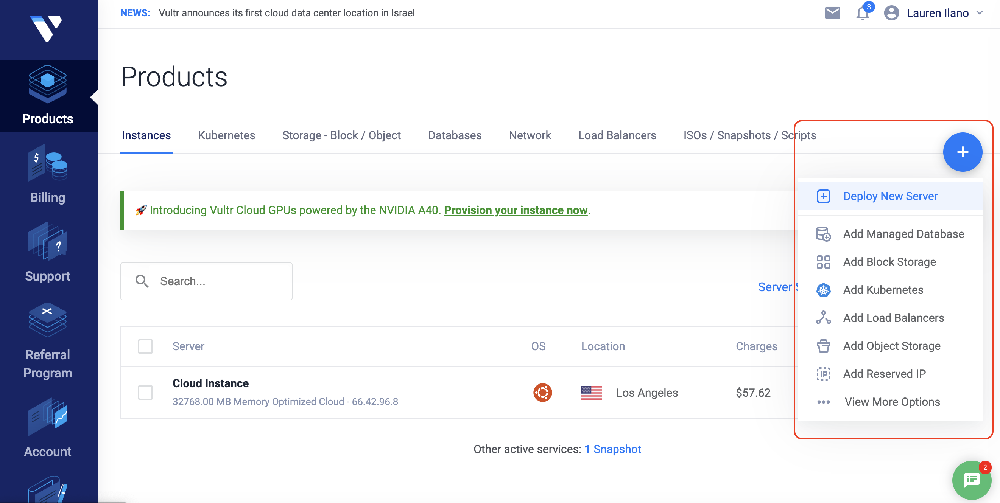
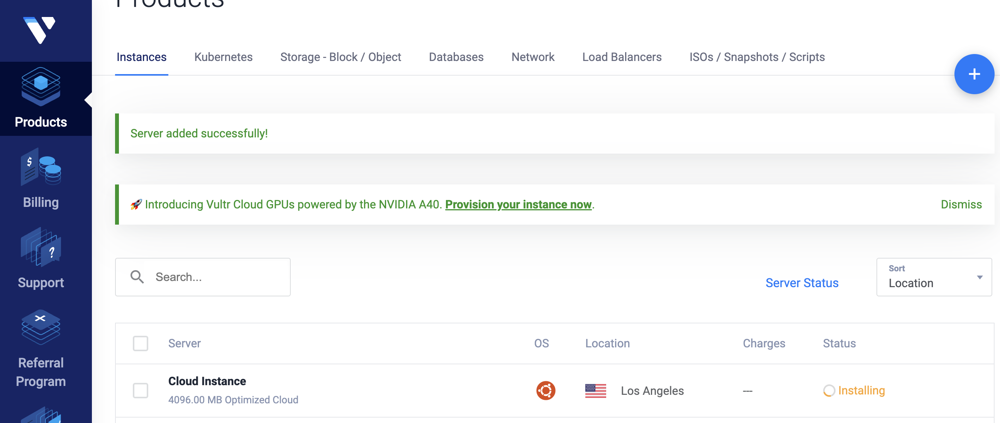
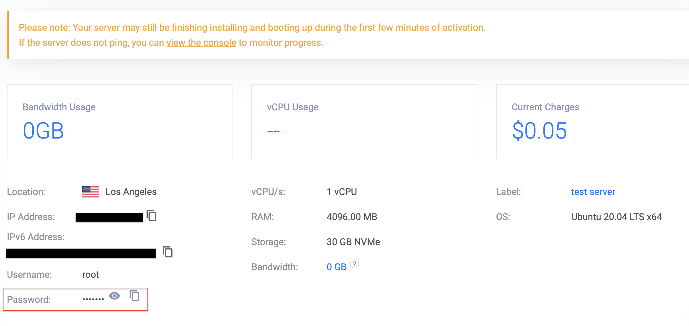
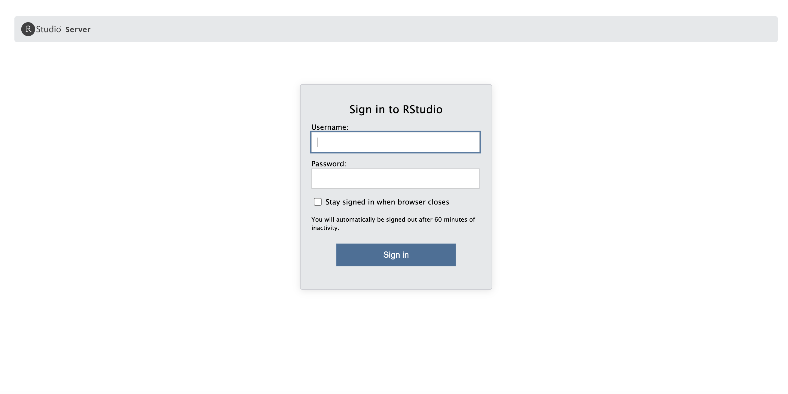
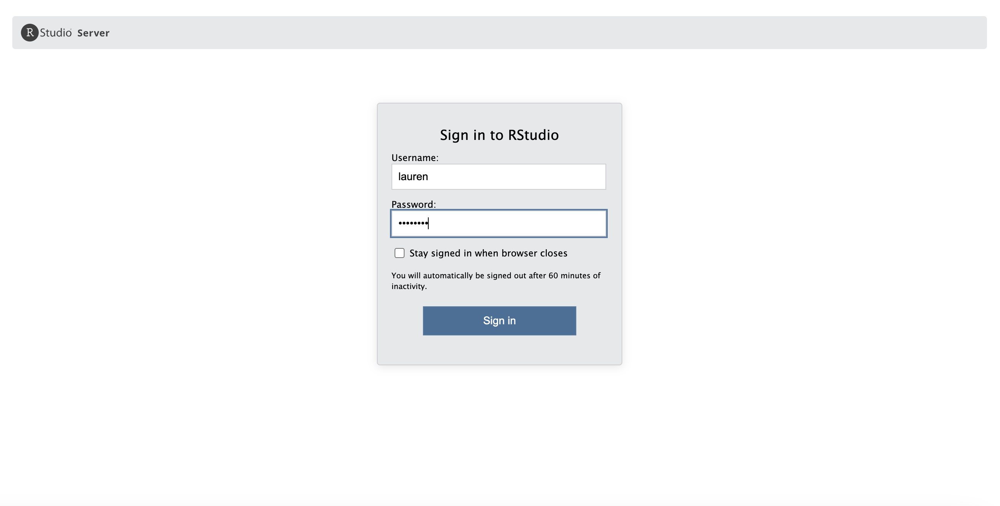
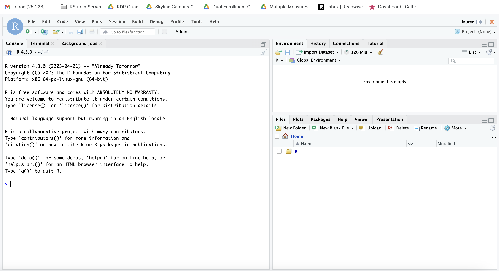
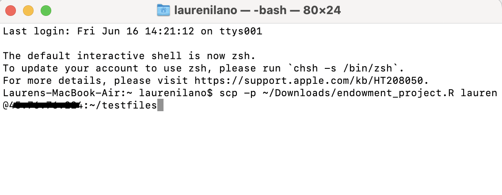
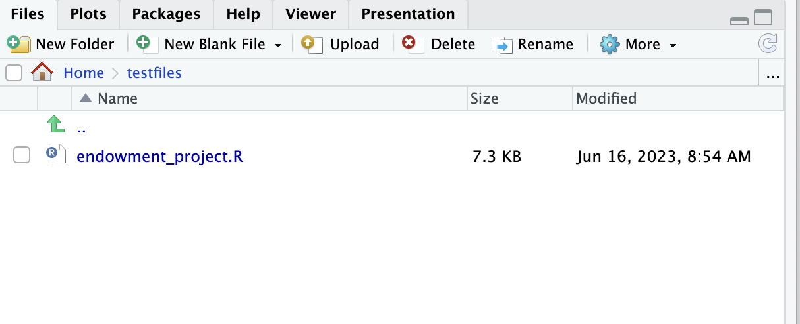

A Step-by-Step Guide to Setting Up an RStudio Server Using Vultr
I am a happy R user but I do acknowledge that R isn’t the best data management tool because of how memory-intensive it is. I’ve been working on some projects recently that have required me to read in super large flat files, which has become impossible given the memory constraints on my laptop. I purchased a macbook air a year ago because I figured that if I ever needed more power I could use some cloud tools or set up a server. I have avoided it until this point, but it has become inevitable so here’s my post on how to set up an rstudio server using Vultr.
What is RStudio Server?
RStudio Server is a useful tool that allows you to access RStudio’s integrated development environment (IDE) remotely. By setting up an R Studio Server on a cloud hosting provider like Vultr, you can enjoy the benefits of running R and R Studio from anywhere and harnessing the computing power of the cloud. With RStudio server, you can use the familiar RStudio interface we all know and love while using computing resources on the cloud. In this tutorial, we will walk through the process of setting up an R Studio Server using Vultr.
Why Vultr?
There are lots of different platforms you can use to set up an RStudio server: AWS, Digital Ocean, Vultr, etc. I have a Digital Ocean server as well, but the reason I am focusing on Vultr in this blog post is because Digital Ocean only allows you to create instances with 16GB of RAM until you’ve used the platform for a few months.1 I would personally prefer to use Digitial Ocean in the future because it is much easier to upgrade and downgrade your instances when you are not using them, saving you money in the long run. However, being the procrastinator that I am, I needed 32GB of RAM immediately so I decided to use Vultr. Once I am able to unlock the higher tier on Digital Ocean, I do plan to switch and will have a post a blog on how I configured my set-up.
Step 1: Sign up for Vultr
- Visit the Vultr website and sign up for an account. If you use my referral link to sign up, you can get $100 of credit and it gives me $35.
- Provide the necessary details and complete the registration process.
- Once registered, log in to your Vultr account.
Step 2: Deploy a Vultr Instance
- After logging in, click the blue plus button to deploy a new server.

- Choose a server. Since this server is going to be used to run R and I want to have increased memory, I would recommend selecting the Optimized Cloud Compute instance and for server type, select Memory Optimized.
- Now, you need to choose a server location. I selected Los Angeles since it is the closest to where I am in California.
- Next, we want to choose the operating system. For this tutorial, we are going to use Ubuntu. Make sure to select the 20.04 version.
- Choose an appropriate server size based on your requirements. For R Studio Server, a server with at least 2GB RAM is recommended. The thing about Vultr is that it isn’t as easy to scale down to a less powerful instance as it is in Digital Ocean. For this tutorial, we are just going to spin up the 50GB NVMe server with 4 GB of memory. It is $40 per month. Note that even if you power down the server, you will still be charged at the $40 per month rate.
- Vultr automatically signs you up for auto backups for a fee. You can turn this off by toggling the switch.
- The final set is to set up an SSH key. Vultr provides a useful tutorial on how to do this if you don’t already have one set up.
- Click on “Deploy Now” to create the instance. After clicking the “Deploy Now” button, you will be taken to your main page and should see your new instance status as “installing.”

Step 3: Connect to the Server
- Once the server is deployed, you will receive an email from Vultr with the server’s IP address, username, and password. You can also access this information by clicking on your instance in your control panel.
- To connect to the server, you need to use an SSH client. If you use a Mac you can use Terminal or use PuTTY on Windows. I have a Mac so I’ll be showing how to do this using Terminal. First, open up your Terminal application on your computer.
- In the terminal application, Connect to the server using the provided IP address and credentials. Note that for now, our usename is root because we haven’t set up any other profiles yet. For example:
ssh root@server_ip_addressThe first time you try to connect, you will probably receive a message saying that the authenticity of host can’t be established. It will ask if you are sure you want to continue. Type “Yes” so it adds your server to the list of known hosts.
Now, it will ask for a password. This password is located in your server’s control panel on your Vultr account. 
Copy and paste this into your terminal to connect to your server. You should see some information about your server print to the terminal console. Most importantly, you should see the prompt at the bottom change to
root@vultr:~#
Step 4: Install R and R Studio Server
- Now that we are logged into our server, the first thing we need to do is update the package list on your server by running the following command:
sudo apt-get update- Next, we want to install R. I needed at least R version 4.0 so I needed to add focal to our sources list. See Dean Attali’s awesome blog on setting up an RStudio and Shiny server here
sudo sh -c 'echo "deb http://cran.rstudio.com/bin/linux/ubuntu focal-cran40/" >> /etc/apt/sources.list'
gpg --keyserver keyserver.ubuntu.com --recv-key E298A3A825C0D65DFD57CBB651716619E084DAB9
gpg -a --export E298A3A825C0D65DFD57CBB651716619E084DAB9 | sudo apt-key add -
sudo apt-get update
sudo apt-get install r-baseWe can check to make sure that R installed correctly by typing “R” into the terminal and pressing enter. You should see R start up like below:
!()[screenshots/start-r.png]
- Next, install the necessary dependencies for R Studio Server:
sudo apt-get install gdebi-core- Then, Use the
wgetcommand to download the .deb file. You can go to the Posit website to make sure you are downloading the most recent version (Note: Replace the URL with the appropriate link if a newer version of RStudio is available).
wget https://download2.rstudio.org/server/focal/amd64/rstudio-server-2023.06.0-421-amd64.deb- Install the downloaded package using
gdebi. Note: this may take a bit.
sudo gdebi rstudio-server-2023.06.0-421-amd64.deb- Start the R Studio Server service:
sudo rstudio-server startStep 5: Configure Firewall, Create a User Profile, and Access R Studio Server
- At this point, are server is up and running, but we have to configure the firewall to allowing incoming connections.2 By default, R Studio Server listens on port 8787. Open the necessary port in your firewall to allow incoming connections. In your terminal, enter the following command:
sudo ufw allow 8787- Now we can access R Studio Server by opening a web browser and entering the server’s IP address followed by port 8787 (e.g.,
http://10.10.10.10:8787). You should see the following log in page:

- You can now log in to R Studio Server using your server username and password. Your username and password are going to be the accounts on your server. On our Vultr test server, we only have a root profile so far. Let’s create another user on our server. Also note that if you have a team of folks, you can create an account for each person so they can access the RStudio server using their own credentials. To create a new user, in your terminal, type the following command:
sudo adduser laurenYou will need to set a password and enter directory information. Now I can log in to my RStudio server using my new profile:

Once you log in, you will see a familiar RStudio interface.

Step 6. Getting Files on Server
Right now, since we built a fresh instance, there are no files on the machine. The whole point of getting this server set up was to be able to run R code on the cloud so we are going to need to find a way to get our R scripts and data onto the server.
The first thing we will do is create a folder called testfiles in our lauren user folder where we want to place our files from our local computer. In the terminal, type the following commands to go to the created user folder and make a folder called testfiles. Change out lauren for whatever your new user profile is called.
cd home/lauren
mkdir testfiles
sudo chmod a+rwx /home/lauren/testfilesNow that we’ve made our target folder in our RStudio server, we need to open up another terminal window on our desktop to start the secure copy process using the linux scp command. Notice how in the terminal I am using my macbook air account and copying a file called endowment_project.R over to the RStudio server.

scp -p ~/Downloads/endowment_project.R lauren@45.76.76.224:~/testfilesNow when I go to the RStudio server, I can see my file in the testfiles folder:

You can repeat the process with more files or even copy entire folders to the RStudio server. You could also connect to Dropbox or Google drive if you need to.
Footnotes
At least that’s what they told me… I guess they want to make sure you are going to pay for your usage so they won’t unlock the higher tiers until you have a few months under your belt… I even asked if I could pay up from and they said no :(↩︎
When setting up a Digital Ocean droplet, you wont have to do this step.↩︎